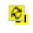

1
Getting Started with Design Intent
Virtuoso Design Intent complements the Virtuoso Schematic Editor XL and Virtuoso Layout Suite XL applications by providing a method for the schematic designer to capture and communicate their design goals on existing objects within a design and to provide the layout designer the freedom to decide how those goals are implemented. Design goals can be defined and discussed, implementation restrictions resolved, and decisions agreed and recorded to prevent duplication of effort during design reuse.
The schematic designer can specify the design intent for an object by recording editable notes, referred to as annotations, directly in the schematic design. Each design intent is displayed on the canvas with an accompanying glyph which acts as a marker and facilitates access to detailed information about the design intent. Each annotation can hold key constraint requirements and detailed instructions for individual objects.
Design intents in Schematics XL are stored in the schematic view and in the layout view for Layout XL. The process of syncing shares the design intent data from the schematic view to the layout view, and vice versa.
After syncing, the annotations can be easily identified on the layout canvas and in the Navigator assistant. The layout designer can begin implementing each intent as specified, reporting the current implementation stage for each intent, and adding progress notes as required.
Design Intent complements the existing constraints flow. Capturing the schematic designer’s requirements at a higher level, enables them to communicate their requirements to layout engineers without overlapping their roles. By using Design Intent to capture design goals, constraints can be used to focus purely on defining the specific rules that are required to satisfy and implement the designer’s original intent.
Design intent is not a replacement for Constraints, so if you already use constraints, you can continue to use them as a basis to implement the Design Intent requirements.
By regularly syncing in the layout view, schematic designers can be kept up to date on the implementation progress of each annotation and respond to any queries or comments recorded by the layout designer. Finally, the schematic designer can sign off a design when the original goals have been satisfactorily implemented into the design.
The progress of all the design intent implementation on a design can be checked using a high level report generated from either Schematics XL or Layout XL.
This section covers the following topics:
The Design Intent Flow
The flow of Virtuoso Design Intent is contained within Virtuoso Schematics XL and Virtuoso Layout XL and requires interaction between the schematic and layout designers working together on a design.
- Schematic designer has some intent to convey for an object or group of objects (for example, device matching requirements, noisy/sensitive nets, high currents, voltage drops, pin information). They capture their design goals on the Create Design Intent form using a combination of text notes and predefined custom property profiles. (The property profiles contain frequently used design intent specific properties that formalize design goals e.g. add shield, add guard ring, etc.)
- The design intent is saved to the schematic and is displayed as an easily identifiable, colored annotation on the canvas. Objects with annotations are easy to identify in the Navigator as the existing icon is overlaid with a special design intent icon overlay. On the canvas, design intent annotations on objects are displayed with a name, glyph and shape.
- The design intent is synced to Layout XL and from then on design intent changes are updated on the design, visible in both Schematics XL and Layout XL.
- Layout designer can clearly identify the objects with design intents and begins implementing each intent. Using the Edit Design Intent form, they can update the current implementation stage and add implementation notes or queries to communicate back to the schematic designer.
- By regularly syncing, the schematic designer is updated on the implementation progress of each design intent in the design. Using the Edit Design Intent form, they can respond to any queries or comments recorded by the layout designer, adapting the intent if required and ultimately signing off on the implementation of their intended design.
- Progress can be checked at any point using a high level summary report generated from either Schematics XL or Layout XL.
Benefits of using Design Intent
Design intent offers the following benefits:
- Design intents are directly created and edited on design objects within the canvas using right-click menu items and colored annotations. Saves the schematic designer from having to design and set up each object individually. Using annotations allows them to focus on capturing their design intent without having to create physical constraints on the design.
- The Navigator displays design intent information within its own specific category and also on individual objects associated with a design intent using including colored overlays, tooltips and right-click menu items.
- A tooltip summarizing the design intent on a group of objects and its implementation status, is displayed by hovering on a design intent in the Navigator.
- Key information can be accessed from an annotation’s accompanying glyph on the canvas to display an info balloon that can be pinned to the canvas.
- Allows a seamless flow to be developed by means of regular syncing between the schematic and layout views. Syncing also updates the easily identifiable annotations between the schematic and layout canvases.
- Design intent is transferred to the layout view for implementation, allowing layout designers the freedom to decide how to physically implement the intended design.
- Encourages collaboration between the schematic and layout designers to produce effective designs. The layout designer is able to update the design intent status in Layout XL and add implementation notes to communicate with the schematic designer about any issues that need to be resolved. The schematic designer can change the specification if necessary and ultimately sign off on the implementation.
- Facilitates checking on the current progress of all the design intent on a design using a high level report generated from either Schematics XL or Layout XL.
Design Intent Interaction between Schematics XL and Layout XL
Virtuoso Design Intent is run between Schematics XL and Layout XL. Generally, design intents are created in Schematics XL where they are stored in the schematic view. They are then transferred (using syncing) to Layout XL, where they are stored in the layout view.
To enable seamless syncing when working with design intents, the same up to date version of a cell must be open in both schematic and layout views. If working in Schematics XL, the corresponding layout view must also be open (read-only is acceptable) and vice versa if working in Layout XL. As might be expected, many of the options are disabled when in read-only mode.
Design intent can be launched directly from existing schematics. If your organization uses constraints, there are specific requirements that you need to consider. For more details, see Using Design Intent with Constraints.
Using Design Intent with Constraints
The storage of constraints differs between schematic and layout. In the schematic, constraints created in Schematics XL are stored in an OpenAccess database (hierDesign.oa) that resides in the constraint view. In the layout, the constraints are stored in the layout database itself.
Design Intent complements the constraints flow in your organization by allowing schematic designers to capture their design goals in Schematics XL without actually creating constraints so a separate constraint view is not created. The design intent is synchronized to Layout XL, where the layout designer has the freedom to decide how to physically implement and achieve the design intent using constraints within Layout XL. The responsibility of creating constraints moves from Schematics XL to Layout XL.
To ensure that a constraint view is not created when transferring constraints from Layout XL to Schematics XL using the Update Schematic/Layout Constraints button, all design intents implemented using the constraint manager must have their constraints included in the design intent template (physical constraint). This ensures that device correspondence information is maintained during an Update Schematic/Layout Constraints transfer and that implementation constraints are not transferred.
Prerequisites
It is recommended that before implementing design intent into a design, the schematic and layout designer agree on the type of information to be shared within a design intent and that custom profiles are set up. For more details, see Defining Property Profiles.
Features Specific to Design Intent
Design intent has specific features available using the Design-Intent workspace which is comprised of the Design Intent toolbar, the canvas, and the Navigator assistant. In Layout XL, it also includes the addition of the Constraint Manager assistant. The features range from carrying out specific actions on an object or design intent to toggling their visibility on the canvas. Each of these features is described in detail in the following sections.
- Design-Intent Workspace
- Design Intent Toolbar
- Constraint Manager
- Interacting with Design Intent on the Canvas
Design-Intent Workspace
The Design Intent workspace is designed to help you create and manage design intents using the Navigator assistant and on the canvas.
The workspace comprises the following elements:
|
lets you toggle the display of design intent with a single mouse click. |
||
|
shows the Design Intent category in the Summary pane of the Navigator assistant. There is a set for each design intent category and the number of design intents within each set is displayed. When you select an object in the Navigator, the object is highlighted on the canvas in Schematics XL and Layout XL. It also halos any objects that are also members of the same design intent across both applications. For more details, see Interacting with Design Intent in the Navigator Assistant. |
||
|
alerts designer to any design specification or implementation status changes. For more details, see Design Intent Icons in Navigator. |
||
|
indicates the current implementation status for each design intent. For more details, see Design Intent Icons in Navigator. |
||
|
holds key design intent requirements, detailed instructions for individual objects, and can easily be identified on the canvas. |
Design Intent Toolbar
The design intent toolbar contains the following icons, which are available in both write and read-only modes:
|
Toggle the display of the annotation shape on the canvas. For more details, see Annotations. |
||
|
Toggle the display of the annotation name and glyphs on the canvas. For more details, see Glyphs. |
||
|
Toggle the halo functionality in the Navigator and on the canvas. For more details, see Haloing. |
||
|
Remove all the design intent from the cellview. For more details, see Deleting Design Intent on Objects. |
||
|
Generate a high level report from Layout XL or Schematics XL to report on the design intent within a design. For more details, see Running Design Intent Reports. |
||
|
Enabled only if there are design intent changes to be synced, syncs all the design intent between the schematic and layout cellview. The tooltip lists the individual design intents that shall be synced. For more details, see Syncing Design Intent. |
Interacting with Design Intent in the Navigator Assistant
The Navigator shows a hierarchical representation of all the devices, nets, and pins in the design. The design intent within a cellview can be viewed using the following categories in the Summary pane of the Navigator:
-
Objects lists each object in the design. Each object associated with a design intent has an overlay over its normal icon.
When you select an object in the Navigator, the object is highlighted on the canvas in both applications. It also halos any objects that are also members of the same design intent. -
Design Intent lists each design intent within the cellview, grouped by set. When a set is expanded, each design intent within the cellview for that category is listed. An icon is associated with each category of design intent.
Selecting a set, opens the Details pane where each design intent within the cellview for that category is listed. Immediately below this, a hierarchical representation of the instances where those design intents are associated is listed. Selecting the set All, lists a hierarchical representation of all the design intent within the cellview.
When you select a design intent in the Navigator, all the associated objects are haloed in Schematics XL and Layout XL.
The Design Intent column is a resizable and sortable column displayed by right-clicking over the column header area. The column displays the implementation status of each Design Intent. If displaying Objects in the Navigator, the column also displays the name of the design intent. If no design intents are associated with an object, the column is left blank.
More information on design intent features is available in the following sections:
- Design Intent Icons in Navigator
- Context-Sensitive Menu Options in Navigator
- Tooltips on the Navigator
For general information on the functionality of
Design Intent Icons in Navigator
For the Design Intent category, the Navigator tree displays the associated design intent icon for the
In the Navigator tree for the Objects category, any objects associated with a design intent have a design intent overlay displayed on their object icon. If a design intent requires to be synchronized, the design intent overlay is replaced with the Sync icon  .
|
A design intent has been associated with the object. On creating a design intent, the member objects of the design intent are displayed with a design intent overlay. The color of the overlay is the same used to identify the annotation on the canvas and is set as part of the Style when Creating Design Intents. |
||
|
The design intent associated with the object has been amended and changes require to be synced between the schematic and layout cellviews. |
Implementation Status of Design Intent
The following icons displayed in the Design Intent column indicate the current implementation status for the design intent. The implementation status is updated by the layout designer in the Create Design Intent form.
|
No progress has been reported for the associated design intent in Layout XL. |
||
|
This status type is automatically associated when a design intent is created or an object is added or removed from a design intent in Layout XL. Design intents that have been created or amended in this way require to be reviewed by the schematic designer and validated before they are implemented into the design. For more details, see Reviewing and Editing a Design Intent Created in Layout XL. |
||
|
There is an issue regarding the implementation of the associated design intent. |
||
|
The design intent has been implemented into the design and is ready to be checked and signed off in Schematics XL. For more details, see Verifying and Signing Off a Design Intent. |
Context-Sensitive Menu Options in Navigator
A context-sensitive menu is accessed by right-clicking anywhere on the Navigator and choosing Design Intent. The menu options displayed vary depending on the selections made on the Navigator from which the menu is called.
|
Create a new design intent on the selected objects. For more details, see Creating Design Intents. |
|
|
View/amend existing design intents associated with the selected objects using the Edit Design Intent form. For more details, see Editing a Design Intent. |
|
|
Add the selected objects to an existing design intent. For more details, see Adding Objects to a Design Intent. |
|
|
Remove the selected objects from a design intent. For more details, see Removing Objects from Design Intents. |
|
|
Delete the selected design intent by removing it from all associated objects. For more details, see Deleting a Design Intent. Note: This option is disabled in Layout XL. In Schematics XL, when multiple objects are selected that are associated with multiple design intents, the submenu option Delete All Design Intent on Selected Objects is also displayed. This removes all the associated design intents from the selected objects. For more details, see Deleting a Design Intent. |
|
|
Delete all design intent from the cellview. For more details, see Deleting All Design Intent in Cellview. This option is also available by right-clicking anywhere on the canvas in Schematics XL only. |
|
|
Sync – if the objects selected in the Navigator have design intents associated that require to be synced, the individual design intents are listed with the prefix “Sync –”. Only the design intent for the selected menu item is synced between the schematic and layout cellviews. For more details, see Syncing a single design intent. Sync All Selected Design Intent when the objects selected in the Navigator have multiple design intents associated that require to be synced, the option to Sync All Selected Design Intent is displayed. Only the design intents associated with the selected objects are synced between the schematic and layout cellviews. Sync All Design Intent syncs all the design intent in the design between the schematic and layout cellviews. For more details, see Syncing Design Intent. |
* If the selected object has multiple design intent options available, a slider option is displayed providing access to each design intent.
Selecting a design intent in the Navigator
Tooltips on the Navigator
Hovering the cursor over the Name column in Navigator displays a tooltip containing general information on the object. Hovering the cursor over the Design Intent column displays a tooltip showing only the associated design intent information for that object, including the status of
Interacting with Design Intent on the Canvas
On creating a design intent, in addition to the features added in the Navigator, a design intent
More information on design intent features is available in the following sections:
Context-Sensitive Menu Options on Canvas
A context-sensitive menu is accessed by right-clicking anywhere on the canvas and choosing Design Intent. The menu options displayed vary depending on where on the canvas the menu is called from, and the selections that are currently made.
Right-clicking on an annotation’s
|
Create a new design intent on the selected objects. For more details, see Creating Design Intents. |
|
|
View/amend existing design intents associated with the selected objects using the Edit Design Intent form. For more details, see Editing a Design Intent. |
|
|
Add the selected objects to an existing design intent. For more details, see |
|
|
Remove the selected objects from a design intent. For more details, see Removing Objects from Design Intents. |
|
|
Delete the selected design intent by removing it from all associated objects. For more details, see Deleting a Design Intent.
In Schematics XL, when multiple objects are selected that are associated with multiple design intents, the submenu option Delete All Design Intent on Selected Objects is also displayed. This removes all the associated design intents from the selected objects. For more details, see Deleting a Design Intent. |
|
|
Delete all design intent from the cellview. For more details, see Deleting All Design Intent in Cellview. |
|
|
Sync – if the objects selected in the canvas have design intents associated that require to be synced, the individual design intents are listed with the prefix “Sync –”. Only the design intent for the selected menu item is synced between the schematic and layout cellviews. For more details, see Syncing a single design intent. Sync All Selected Design Intent when the objects selected in the canvas have multiple design intents associated that require to be synced, the option to Sync All Selected Design Intent is displayed. Only the design intents associated with the selected objects are synced between the schematic and layout cellviews. Sync All Design Intent syncs all the design intent in the design between the schematic and layout cellviews. For more details, see Syncing Design Intent. |
* If the selected object has multiple design intent options available, a slider option is displayed providing access to each design intent
In Layout read-only mode, only Sync All Design Intent and Edit Design Intent are available. The Edit Design Intent option is enabled but the form displayed is read-only.
Annotations
Annotations (notes) are created and edited directly on the design to be shared across the schematic and layout canvases. Each annotation can hold key design intent requirements, detailed instructions for individual objects, and can easily be identified on the canvas.
An annotation on the canvas is displayed as a glyph, annotation label, and shape in Schematics XL and as a glyph in Layout XL:
The display of annotation items can be toggled using the relevant button on the Design Intent Toolbar.
Design intent annotations have customizable style options to make them distinguishable from other design intents on the canvas. The style options are set and edited on the Create Design Intent form and the color selected is used for each element of the design intent across the schematic and layout canvases. The design intent name, font, and font size of each annotation label can also be amended using the Property Editor or the Edit Object Properties form. This excludes annotation labels for design intent categories High Current or Max Voltage Drop which display the object name rather than the design intent name so they cannot be amended in this way.
In Schematics XL, the position of the glyph and label can be moved as required to improve visibility on the canvas. For more information on annotation functionality, see Interacting with Design Intent on the Canvas.
The display of the annotation items can be toggled using the buttons on the Design Intent Toolbar.
Glyphs
The glyph color is defined in the Style section of the Create Design Intent form. In Schematics XL, the size of the glyph is controlled by the design intent’s
Clicking a glyph displays a Design Intent Info Balloon which displays details of the design intent. The design intent info balloon also has an Edit button which directly opens the
Right-clicking on a glyph displays a context-sensitive menu. The options available vary depending on the selections that are currently made. For more details, see Interacting with Design Intent on the Canvas.
Hovering on a glyph
Design Intent Info Balloon
Design intent info balloons are accessed by clicking on a
Each info balloon contains details of the design intent including the profile properties and notes. In Layout XL, the Implementation Status and Notes are also displayed.
Clicking Edit, opens the
You can pin and reposition an info balloon as needed.
Haloing
Selecting a design intent or object in the Navigator or on the canvas, or hovering on a
Selecting multiple items in the Constraint Manager results in multiple design intent members being haloed in the canvas simultaneously. A different color is used for each design intent.
Haloing is controlled by toggling the button on the Design Intent Toolbar for each application.
Syncing
For schematic and layout designers to work collaboratively on a shared design, it is crucial that the design intents in the schematic and layout views of a design are kept in sync. Regular syncing creates a seamless flow between Schematics XL and Layout XL and enables schematic and layout designers to communicate with each other to produce designs without unwanted electrical side-effects.
You can either sync an individual design intent or all design intent to update any design intent changes in the schematic and layout views to ensure that both systems are synced. See Syncing Design Intent for more details.
The following types of update result in the changes being marked in the other system with a
- Changing annotation colors
- Updating Profile or property settings
- Adding design notes in the Edit Design Intent form
- Adding or removing design intent members
For more details, see Syncing Between Schematic and Layout Views.
Constraint Manager
Design Intent allows schematic designers to capture their design goals in Schematics XL without actually creating constraints. The design intent is transferred to Layout XL, where the layout designer is responsible for physically implementing the design intent in the design. The responsibility for creating constraints moves from Schematics XL to Layout XL.
Design intents are grouped together in the Constraints Manager. You can create constraints on the layout view using the Constraint Manager assistant. The constraints created are supported by the various physical design applications. For more details, see Adding a Physical Constraint to an Existing Design Intent.
Selecting a design intent in the Constraint Manager halos the design intent on the canvas across both Layout XL and Schematics XL.
For more information on how to use constraints and the Constraint Manager, see the
Return to top